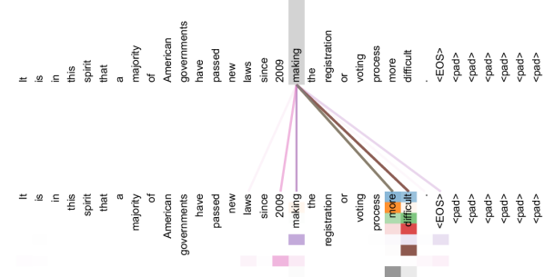

Attention Is All You Need
一句话贡献(原文摘要)：提出 Transformer——一个完全基于注意力、彻底抛弃循环与卷积的序列转换架构。它更易并行、训练更快，并在机器翻译上刷新了当时的最好成绩。这一页带你从「它解决什么问题」一路读到「逐图拆方法 + 亲手算一遍注意力 + 它到底证明了什么」。
1 · 它解决什么问题
2017 年，序列转换(翻译、摘要…)的主流是 RNN / LSTM 编码器-解码器 + 注意力。瓶颈在「循环」本身。
😣 循环的痛
RNN 必须按时间步一个接一个算 h_t = f(h_{t-1}, x_t)，无法在序列长度方向并行，长序列尤其慢、显存吃紧。
🛣️ 长程依赖的远
两个相距很远的词要互相影响，信号得穿过很多步，路径长、易衰减——学长距离关系难。
💡 论文的主张
注意力本就能「一步」把任意两个位置连起来。那能不能干脆只用注意力，把循环和卷积全扔掉？
✅ 结果
能。Transformer 不但更易并行、训练更快，翻译质量还更高(英→德 28.4 BLEU，超此前最好成绩含集成 >2 BLEU)。
2 · 背景与动机：为什么自注意力更划算
论文第 4 节用一张表(Table 1)把「自注意力 vs 循环 vs 卷积」摆在三个维度上比——这是「为什么这么设计」的硬核论据。
| 层类型 | 每层复杂度 | 串行操作数 | 最大路径长度 |
|---|---|---|---|
| 自注意力 Self-Attention | O(n²·d) | O(1) | O(1) |
| 循环 Recurrent | O(n·d²) | O(n) | O(n) |
| 卷积 Convolutional | O(k·n·d²) | O(1) | O(log_k n) |
| 自注意力(受限 r 邻域) | O(r·n·d) | O(1) | O(n/r) |
- 串行操作 O(1)：自注意力一层内所有位置同时算完，天然并行——这是训练快的根。
- 最大路径长度 O(1)：任意两个位置一步直连，长程依赖好学(循环要走 O(n) 步)。
- 代价：每层 O(n²·d)——随序列长度平方增长。短序列很划算，长序列是真实约束(论文也提可退而用「受限注意力」)。
3 · 整体架构 逐图精读开始
经典的编码器-解码器，但每一块都是「注意力 + 前馈」的堆叠。先看全貌，再逐个零件拆。

编码器(左)
N=6 个相同层，每层两个子层：① 多头自注意力 → ② 逐位置前馈网络(FFN)。每个子层都包一层残差 + LayerNorm：LayerNorm(x + Sublayer(x))，全程维度 d_model=512。
解码器(右)
也是 6 层，但每层多一个第三子层：对编码器输出做编码器-解码器注意力。它的自注意力还要加掩码(masked)，防止位置 i 看到 i 之后的词，保住自回归性质。
两端
底部：输入/输出词嵌入 + 位置编码(解码端输入「右移一位」)；顶部：Linear → Softmax 输出下一个词的概率。
数据怎么流过编码器一层
4 · 注意力机制 + 关键公式
整篇的心脏：缩放点积注意力，再把它并行成多头。


① 缩放点积注意力
用查询 Q 去和每个键 K 算相似度(点积)，缩放后过 softmax 得权重，再对值 V 加权求和：
② 多头注意力
与其用一个大注意力，不如把 Q/K/V 投影到 h 个低维子空间各算一次，让模型同时关注不同位置、不同表示子空间，再拼接：
where headi = Attention(Q WiQ, K WiK, V WiV) (3.2.2)
基础模型：h=8，d_k=d_v=d_model/h=64，d_model=512。
③ 注意力在模型里的三种用法（第 3.2.3 节）
Q 来自解码器上一层，K/V 来自编码器输出——让解码端每个位置都能看输入全序列。
Q/K/V 同源(编码器上一层)，每个位置可关注上一层所有位置。
同源，但把「看向未来」的连接在 softmax 前置 −∞ 掩掉，保住自回归。
④ 位置编码 & 前馈网络
注意力本身不含顺序信息，所以给嵌入加上正弦位置编码；每层还有一个对每个位置独立作用的两层 FFN：
PE(pos, 2i+1) = cos( pos / 100002i/d_model ) (3.5)
5 · 例题精讲 · 手算一次注意力
把公式 (1) 走一遍，注意力就不再抽象了。
设 d_k=4(故 √d_k=2)。查询 q=[1,0,1,0]；键 k₁=[1,0,1,0], k₂=[0,1,0,1], k₃=[1,1,0,0]；值 v₁=[1,0], v₂=[0,1], v₃=[1,1]。求 Attention(q,K,V)。
- 点积 q·kⱼ：q·k₁=2, q·k₂=0, q·k₃=1。
- 除以 √d_k=2：[1.0, 0.0, 0.5]。
- softmax：e^1,e^0,e^0.5 ≈ [2.718,1.000,1.649]，和 ≈ 5.367 → 权重 ≈ [0.506, 0.186, 0.307]。
- 对 V 加权求和：0.506·[1,0]+0.186·[0,1]+0.307·[1,1] ≈ [0.813, 0.493]。
6 · 交互：亲手调一调注意力 demo
拖动查询向量 q，看它和 4 个固定键的点积如何经 缩放 + softmax 变成注意力权重，并加权出输出。试试关掉「除以 √d_k」，感受 softmax 为什么会变「尖」。
k₁=(2,0) v₁=(1,0)
k₂=(0,2) v₂=(0,1)
k₃=(1.4,1.4) v₃=(1,1)
k₄=(−2,0) v₄=(−1,0)
7 · 实验与结果
主战场是 WMT 2014 机器翻译。两个尺寸：base 与 big。
| 模型 | 英→德 BLEU | 英→法 BLEU | 训练 |
|---|---|---|---|
| Transformer (base) | 27.3 | 38.1 | ~12 小时 / 10 万步 |
| Transformer (big) | 28.4 | 41.8 | 3.5 天 / 30 万步 |
- 英→德 28.4：超过此前所有最好成绩(包括集成模型) >2 BLEU。
- 英→法 41.8：当时单模型新最佳。
- 成本：big 模型 8 块 NVIDIA P100、3.5 天——相对当时的高分模型训练量小得多。
关键超参数(base / big)
8 · 怎么复现 / 读代码 动手
论文给了官方实现；社区也有最适合「对着论文读」的逐行版本。
📦 官方 · tensor2tensor
论文指向的官方代码库(TensorFlow)，含 Transformer 的训练配置。
github.com/tensorflow/tensor2tensor
📖 The Annotated Transformer
哈佛 NLP 的逐行注释实现——左论文、右 PyTorch，精读首选。
nlp.seas.harvard.edu
🤗 现代实践 · transformers
真要用，直接上 HuggingFace；本论文是其全部架构的鼻祖。
# 1. 先跑通 Annotated Transformer 的 scaled dot-product attention 一段，
# 对照本页第 4 节公式 (1)。
# 2. 看 MultiHeadedAttention：h 个投影 + Concat + 最后 Linear(W^O)。
# 3. 看 PositionalEncoding：正弦/余弦那两行，对照公式 (3.5)。
# 4. 看 EncoderLayer / DecoderLayer：两/三个子层 + Add&Norm 残差包裹。
# 5. 最后看 mask：解码器自注意力为什么要 subsequent_mask。9 · 影响 & 批判性阅读
先看它点燃了什么，再做一件读论文最该练的事：分清「论文证明了的」与「论文只是假设/未覆盖的」。
这篇之后（背景，非本文结论）
Transformer 成了后续几乎所有大模型的底座：BERT(2018，双向编码器)、GPT 系列(解码器自回归)、ViT(2020，把图像切块当 token)。这一段是后续发展的常识性背景，不是本论文自身的结论。
声明核查（点击翻面看判定）
读顶会论文的关键技能：一句主张，到底是实验证实、只是假设，还是有条件成立？

10 · 术语表
本文高频术语速查，输入关键词实时过滤。